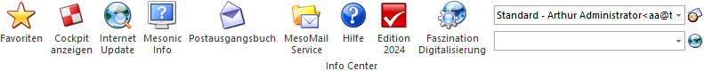

Ø Favoriten
Hier können persönliche Einstellungen, wie häufig verwendete Menüpunkte, Makros und Links (Internet), verwaltet werden.
Ø Cockpit anzeigen
Wird dieser Button angeklickt, dann wird in das Cockpit (Programm WinLine START) gewechselt.
Ø Internet Update
Über diesen Button können Neuerungen und Neuigkeiten vom mesonic-Server downgeloadet werden.
Ø Mesonic Info
Durch Anwahl dieses Buttons werden die wichtigsten System-Informationen angezeigt.
Ø Postausgangsbuch
Mit Hilfe des Postausgangsbuchs können Serienbriefe, -mails oder -faxe verwaltet und ausgegeben werden.
Ø MesoMail Service
Damit können Nachrichten zwischen WinLine-Benutzern ausgetauscht werden.
Ø Hilfe
Die WinLine-Hilfe wird geöffnet.
Ø Edition 2024
Durch Anwahl des Buttons "Edition 2024" wird die Info-Seite der WinLine Edition 2024 im Standard-Browser angezeigt.
Ø Faszination Digitalisierung
Bei Anwahl des Buttons "Faszination Digitalisierung" wird die Digitalisierungs-Seite der WinLine im Standard-Browser angezeigt.
Ø Absende-Adresse
An dieser Stelle kann aus einer Auswahlbox die Absende-Adresse für den anstehenden Mail-Versand bestimmt werden.
Hinweis
Die Anlage der Email-Adressen erfolgt in den Einstellungen (WinLine START - Parameter - Einstellungen… - Register "Abs-Adressen"). Mit Hilfe des Buttons "Mailadressen bearbeiten" (rechts neben der Auswahlbox) kann dieser Programmbereich direkt geöffnet werden.
Ø Internet Browser
Durch Anklicken des Buttons "Internet Browser" wird der Standard-Internetbrowser mit der Adresse gestartet, welche in der linken Auswahlbox eingetragen wurde.